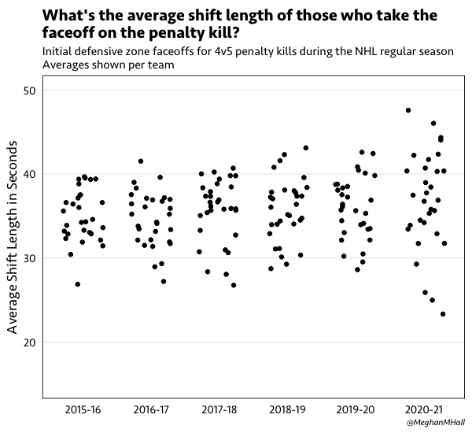
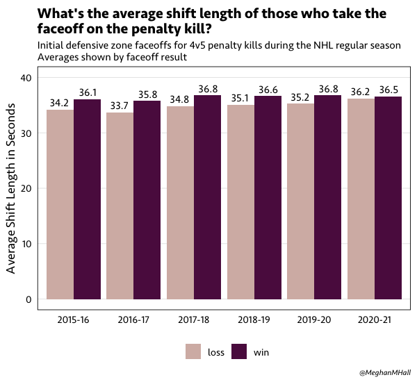
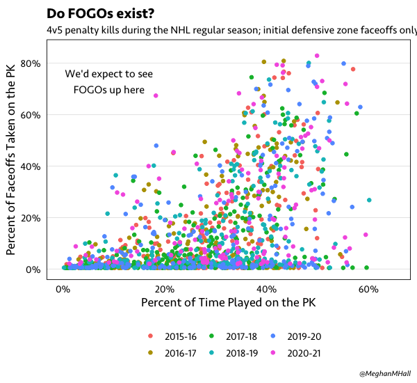
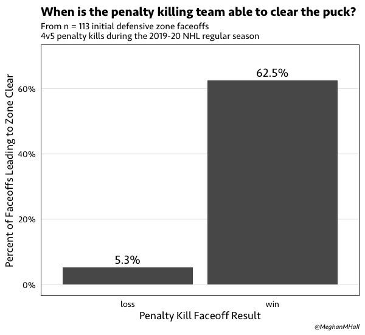
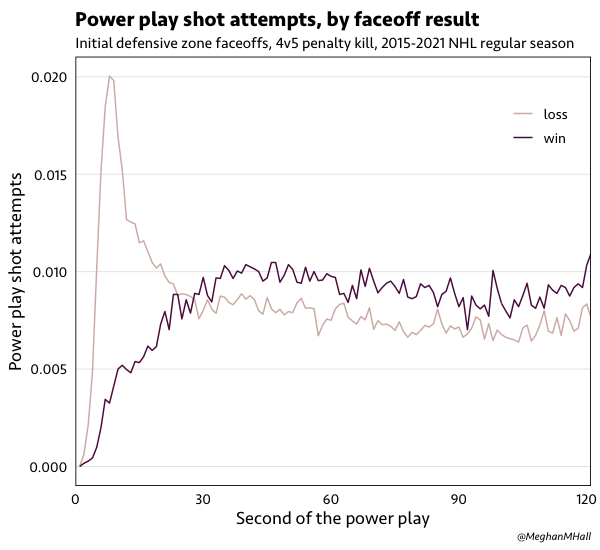
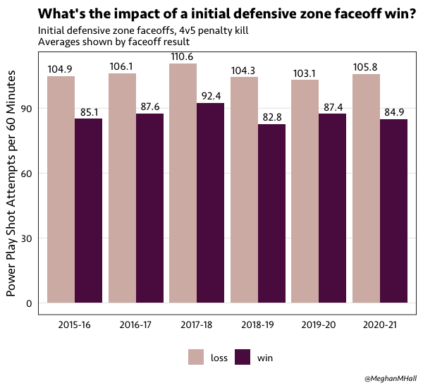

The Baader–Meinhof phenomenon is a fancy term for a simple idea: when you learn about a concept, or hear a new word, then all of a sudden you start seeing it everywhere. It’s usually a form of cognitive bias because your increased attention to this new thing tends to make it seem like it’s occurring at a higher frequency than it actually is.
This happened to me earlier this year with FOGO. If you’re unaware, like I was, FOGO stands for “face off, get off.” It’s a popular term in lacrosse, but in hockey it generally refers to a player on the penalty kill whose main job is the faceoff—they take the faceoff and then leave the ice as soon as possible to be replaced by another player. All of a sudden, I started seeing FOGO references everywhere (i.e., on Twitter and in a few articles), so I assumed it might be a new trend.
Are FOGOs real?
How could we go about determining whether this FOGO thing is actually in fact a trend? Since the aim of a FOGO is to take the faceoff and then leave the ice, we could see whether the average shift length of the player taking the faceoff is changing over the past few seasons. The graph below shows, for each team per season, the average shift length of the players who took the initial defensive zone faceoff of a 4v5 penalty kill. That is, how long did they stay on the ice after that faceoff during that penalty kill?

If the FOGO was becoming a trend, we might see this average shift length moving downward, but that doesn’t appear to be the case. (The wider variation seen in the 2020-21 season isn’t too surprising, as it’s still fairly early in the season and the averages haven’t necessarily stabilized yet.)
We could also look at this same average shift length, this time grouped by the result of that faceoff. Since after all, the ideal outcome of a FOGO is for the player to win the faceoff and then leave the ice. But, from the graph below, there doesn’t appear to be an emerging trend there, either.

Lastly, what if we looked at individual players? That is, who actually takes these faceoffs? (Again, restricting to the initial defensive zone faceoff of a 4v5 penalty kill.) In the graph below, each dot represents a player from one of the last several seasons. The x-axis shows the percent time they spent on their team’s PK (adjusted for games played, so a player missing a chunk of games for an injury, for example, wouldn’t be penalized), and the y-axis shows the percent of these initial defensive zone PK faceoffs they took.

We would expect to see any FOGOs up in that upper-left corner: players who take a lot of faceoffs on the penalty kill but don’t actually play on the PK very much. But as you can see, there’s only one solitary dot in that region: Jason Spezza of the Toronto Maple Leafs this season, who has taken 67% of these initial defensive zone faceoffs but doesn’t spend that much time on the penalty kill otherwise. No player over the past several seasons is particularly close to that specific combination—the closest is that blue dot a bit below, Claude Giroux of the Philadelphia Flyers who took 48% of those faceoffs in the 2019-20 season but didn’t get much other PK time.
Why this focus on PK faceoffs?
Much has been written about faceoffs and their importance—or lack thereof. So what about the specific situation of the defensive zone faceoff that kicks off a 4v5 penalty kill?
A faceoff “win” can be subjective, so before we look at the potential impacts of a faceoff win, what actually happens after the initial defenzive zone faceoff on a 4v5 penalty kill? In an attempt to answer this question, I watched 113 of these faceoffs from the 2019-20 regular season to examine the relationship between a faceoff win, as per the recorded event in the NHL play-by-play data, and the primary goal of the penalty killing team: clearing the puck out of the offensive zone.

As shown in the graph above, the relationship was pretty stark in this sample. When the PK team lost that initial faceoff, they were only able to clear the puck on the resulting possession five percent of the time. But when they won that faceoff, their clear rate increased to nearly 63 percent.
That relationship is reflected in the graph below, which shows the distribution of shot attempts by the power play team per second, grouped by the result of that initial defensive zone faceoff. Penalty kill teams who lose that initial faceoff—meaning they’re likely stuck in their defensive zone and likely facing the power play’s top unit— see a spike in power play shot attempts for the first portion of the penalty.

This initial discrepancy sums up to quite a difference in shot attempt rates over the life of the penalty. Shown below are the power play shot attempt rates for the past several seasons, per the result of the initial faceoff from the perspective of the penalty killing team. (To keep in line with the rest of the analysis, this includes 5v4 penalties only that start with a defensive zone faceoff, from the perspective of the penalty killing team.) It’s a significant difference, with a lower shot attempt generation rate associated with a penalty kill faceoff win, and a similar relationship can be seen with the goals rate.

Should FOGOs be real?
So, given the importance of the initial defensive zone faceoff on a 4v5 penalty kill, maybe FOGOs should be a thing! There’s of course the risk of your FOGO losing the faceoff and then being stuck on the ice in the defensive zone for a while, which might not be an ideal circumstance (especially if there’s a reason that player doesn’t play on the penalty kill in the first place.) But the impacts of an initial faceoff win might be enough to give it a shot.
Who would be good potential FOGO candidates?
| Season | Player | Team | Faceoff Win | PK Time |
|---|---|---|---|---|
| 20192020 | BO.HORVAT | VAN | 56.1% | 8.1% |
| 20192020 | CLAUDE.GIROUX | PHI | 58.9% | 18.3% |
| 20192020 | GABRIEL.LANDESKOG | COL | 55.4% | 1.4% |
| 20192020 | J.T..MILLER | VAN | 58.0% | 12.1% |
| 20192020 | MATT.DUCHENE | NSH | 55.8% | 0.8% |
| 20192020 | SIDNEY.CROSBY | PIT | 55.0% | 6.5% |
| 20192020 | TYLER.SEGUIN | DAL | 58.9% | 13.8% |
| 20202021 | CLAUDE.GIROUX | PHI | 55.9% | 16.8% |
| 20202021 | DAVID.KREJCI | BOS | 58.9% | 0.0% |
| 20202021 | JOHN.TAVARES | TOR | 57.8% | 0.7% |
| 20202021 | LEON.DRAISAITL | EDM | 56.5% | 14.5% |
| 20202021 | SIDNEY.CROSBY | PIT | 57.9% | 3.3% |
| 20202021 | VINCENT.TROCHECK | CAR | 55.7% | 18.8% |
Shown above are players from this season and the previous one who have a 5v5 faceoff win percentage over 55% and play under 20% of their team’s PK minutes. I’ll keep my eye out for anyone joining Jason Spezza in the vaunted FOGO category.
Play-by-play data sourced via the Evolving-Hockey scraper!